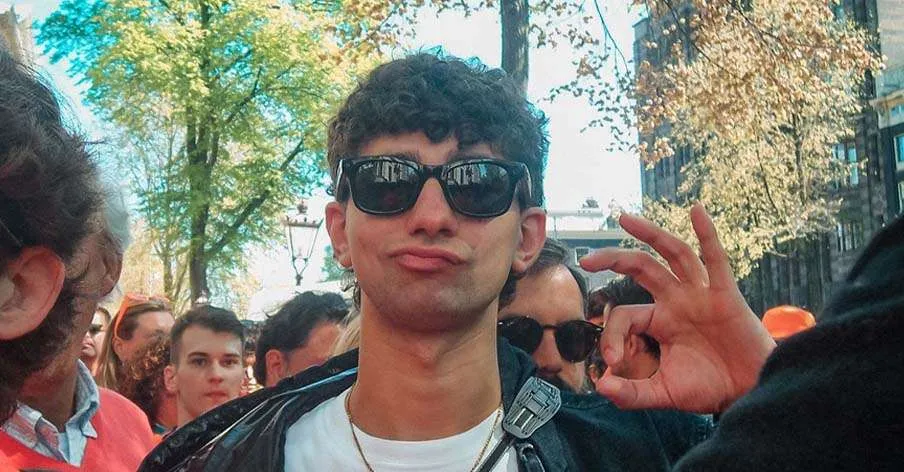
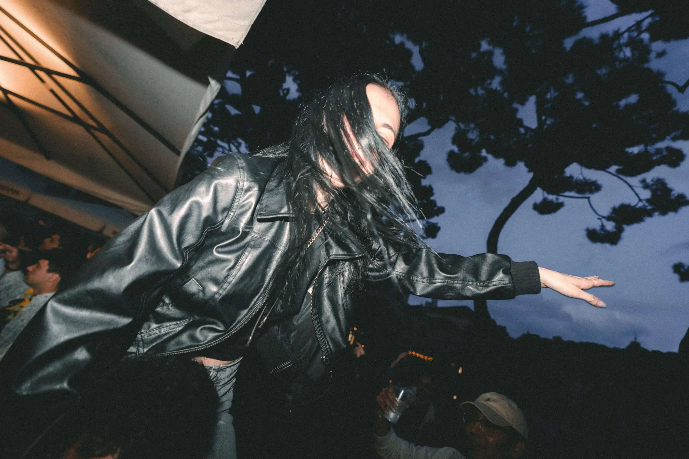
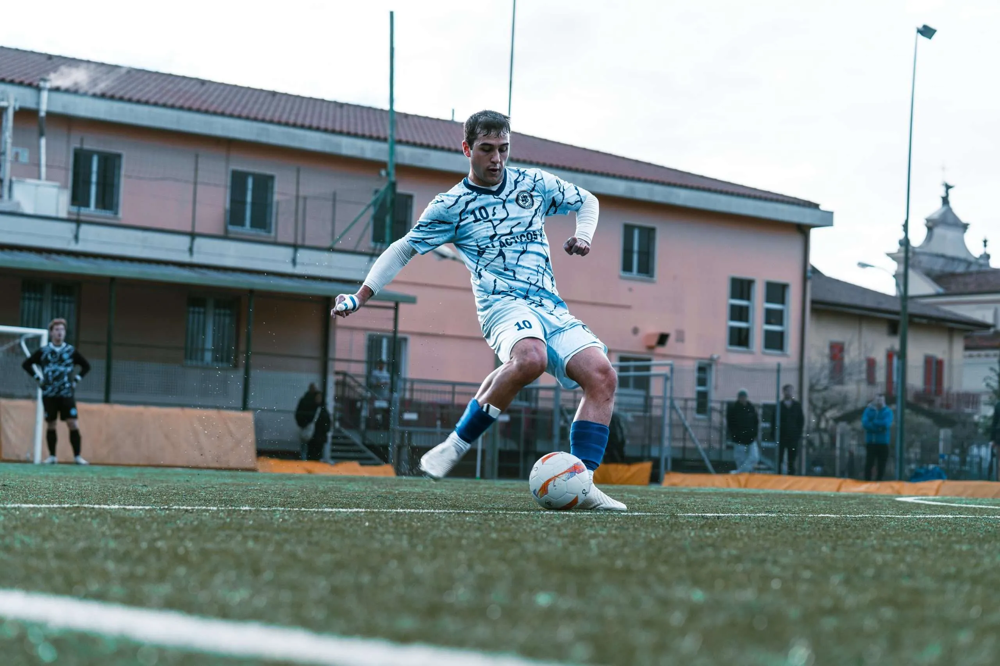
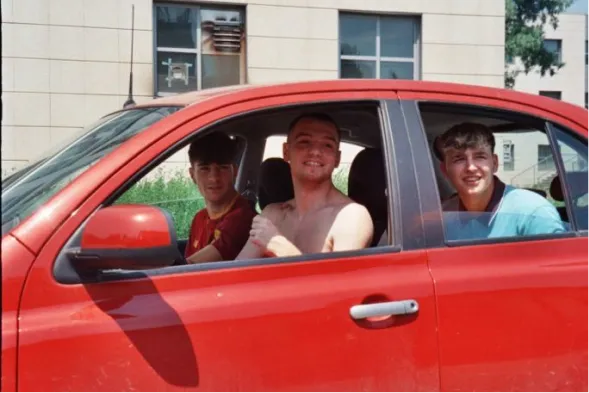
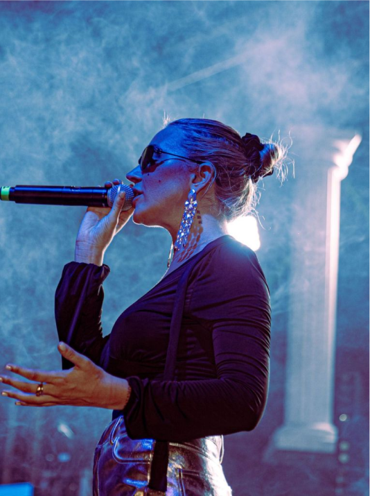
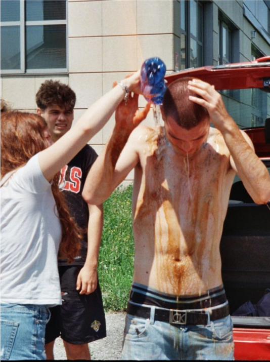
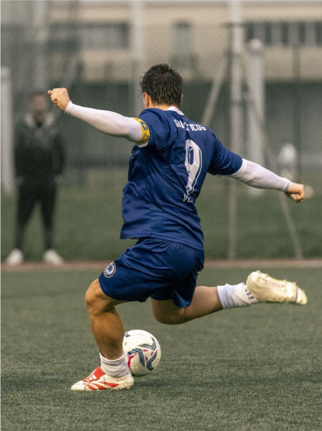

Ho 19 anni e amo intrecciare i fili delle mie storie con quelle degli altri per raccontarle attraverso la mia creatività.

però, potreste definirmi in tanti modi: “videomaker, fotografo, social media manager…”. In realtà non mi rispecchio in nessuna di queste definizioni, mi ritengo soltanto una persona che ama riflettere il proprio modo di vedere le cose sui miei prodotti finali. Se vuoi saperne di più sul mio conto, ho un canale Youtube dove racconto il mio percorso, un profilo Instagram e Linkedin, per non farci mancare nulla. Ogni tanto scrivo anche sul mio blog.

Racconto eventi, party e serate attraverso storie live, foto e video pensati per valorizzare ogni dettaglio. L’obiettivo? Tradurre in digitale l’energia autentica della nightlife e l’atmosfera unica di ogni evento. 🪩
L’esperienza con questa squadra é iniziata come progetto personale e di gruppo dal primo giorno in cui mi sono avvicinato al mondo della fotografia, per poi consolidarsi all’interno della mia vita come un rituale, accompagnandosi al mio percorso di crescita personale e professionale.


La passione per la fotografia è nata ritraendo momenti di quotidianità, e mi sembrava il minimo renderle omaggio dedicando una pagina intera del mio sito agli scatti della vita di tutti i giorni, così come vengono. senza filtri, senza pose ✨

Catturando l’energia e la passione delle esibizioni dal vivo...

Uno sguardo autentico ai momenti non filtrati della vita quotidiana...

Concentrata su movimento, competizione e spirito...